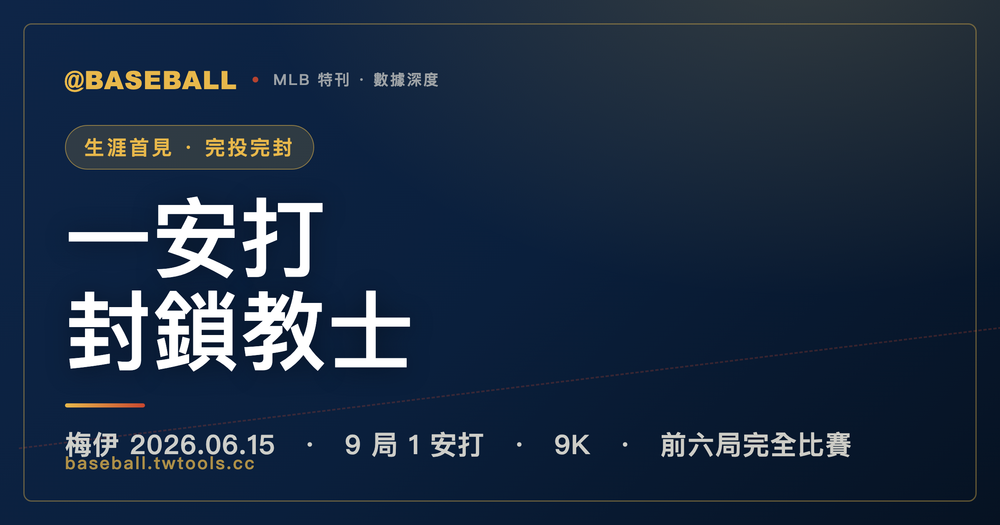

101 球、1 安打、9 K：杜斯汀・梅伊 71 場先發等來的生涯首張完投完封
2026 年 6 月 15 日，杜斯汀・梅伊（Dustin May）用 101 球解決了聖地牙哥教士的打線，繳出生涯首張完投完封：九局、1 安打、9 次三振、0 失分。這是他生涯第 71 場先發才首度達成。前六局梅伊維持完全比賽框架，連續解決 18 名打者；第七局先被小塔提斯（Fernando Tatis Jr.）保送、再被曼尼・馬查多（Manny Machado）打出全場唯一的一壘安打，但此後再無教士打者上壘。紅雀的 3 分全部來自第四局（2 分）與第五局（1 分），皆由第二任投手路卡斯・吉歐利托（Lucas Giolito）讓分——教士此役採開局投手（opener）策略，先發為萬迪・裴拉塔（Wandy Peralta），吉歐利托第二局接手、五局被打 7 安失 3 分（含 3 次保送）吞敗。截至 6/15，聖路易紅雀戰績 39 勝 31 敗（國聯中區第 2），聖地牙哥教士 37 勝 34 敗（國聯西區第 2）——兩支都在爭搶季後賽的球隊，同屬國家聯盟、分處中區與西區——教士的打線這個夜晚只走出了兩名跑者，均在第七局，均是聯盟頂尖明星。

MLB 特刊｜2026.06.15 紅雀 3-0 教士
棒球裡有一種比賽，不靠爆炸性的得分場面、不靠駭人的全壘打飛越牆外，而是靠一個人把每一顆球、每一個出局數、每一個打者的打席都梳理得整整齊齊——九局下來，幾乎沒有任何事情走偏，九局之後，比分板上的那個 0 就那樣穩穩地守在對手的欄位裡。2026 年 6 月 15 日，杜斯汀・梅伊（Dustin May）就投了這樣一場比賽。
這不是他生涯中最被期待的一個夜晚。2026 球季到這一場之前，他的成績單是 4 勝 6 敗、防禦率還掛在 4 字頭——一位中段班先發的水準，沒有特別令人振奮，也沒有讓人完全放棄。教士這天排出的打線，有小塔提斯（Fernando Tatis Jr.）與曼尼・馬查多（Manny Machado）這樣的明星打者；背後是一支截至 6/15 戰績 37 勝 34 敗的國聯西區第 2 球隊，爭搶季後賽席位的壓力讓他們理論上應該在打擊端展現積極鬥志。
然後梅伊上場投球，一球接著一球，解決了一個又一個打者。
一、賽前脈絡：兩支爭季後賽的國聯球隊，與這一場的份量
走進 2026 年 6 月 15 日這場比賽之前，先把兩隊的處境放在桌上看清楚。
聖路易紅雀（St. Louis Cardinals）截至當天戰績 39 勝 31 敗，在國聯中區排名第 2，落後分區龍頭 4.5 場勝差。這不是一支正在冬眠的球隊——39 勝代表他們整體是有競爭力的，但 4.5 場的距離意味著每一場勝利都有它的必要性，尤其是在主場迎接同聯盟對手的這種跨分區對決裡。與此同時，聖地牙哥教士（San Diego Padres）帶著 37 勝 34 敗的成績作客，居國聯西區第 2，落後分區龍頭 8.0 場。兩隊同屬國家聯盟（National League），分處中區與西區——這是一場同聯盟跨分區的對決，平時各自在分區賽事裡廝殺，今天在紅雀主場正面相遇。
把兩隊戰績擺在一起看，這場比賽的份量就清楚了。兩支都在爭季後賽的球隊，兩支分區第 2 的競爭者，來自國聯不同的分區。對紅雀而言，這場勝利可以一定程度地鞏固在分區裡追趕的節奏；對教士而言，在落後龍頭 8 場的困境裡，客場贏球才能真正維持外卡的希望。這種情境下，每一場都是積分板上的一個籌碼。
教士那天採開局投手（opener）策略，由萬迪・裴拉塔（Wandy Peralta）先投第一局，路卡斯・吉歐利托（Lucas Giolito）第二局接手擔任主投；紅雀這邊上場的是杜斯汀・梅伊。一個是接手後要吃下大部分局數的投手，一個是 4 勝 6 敗、本季在中段班漂浮的先發。比賽開始前，沒有什麼明顯的跡象預示著接下來會發生什麼。
二、完全比賽的前六局：18 名打者，沒有人上壘
梅伊這場比賽的敘事主軸，必須從完全比賽說起。
所謂完全比賽（perfect game），是指投手讓上場的每一個打者都出局，沒有任何人以任何方式上壘——不保送、不被打安打、不因野手失誤上壘。每一個半局三上三下，每一個打者都乾淨地被解決掉。梅伊在這場比賽的前六局，就維持住了這個框架：連續解決了教士的 18 名打者，沒有人上壘，沒有任何威脅。
前六局，梅伊投出的好球與壞球、切入的球路角度、進出好球帶的時機，共同構築了一道幾乎無縫的防線。每一局都是三個出局數，每一次上場都讓教士打者帶著失望走回休息區。六局下來，梅伊的投球局數欄位上是 18 個打者、0 人上壘，教士的安打欄是空的。
與此同時，紅雀在進攻端已經累積了關鍵優勢。第四局，紅雀對吉歐利托攻下 2 分；第五局，再追加 1 分——這 3 分全部來自吉歐利托當值的局次，也全都在他離場之前。在這個 3 比 0 的框架下，梅伊有了緩衝空間，但完全比賽的壓力和興奮感，是不會因為有得分就減弱半分的。
六局結束的那一刻，梅伊的完全比賽還是完整的。比分板上，教士的得分欄仍是 0，意味著他們在進攻端完全失語。對任何一位投手來說，走出第六局還保有完全比賽，都是職業生涯裡最讓人印象深刻的幾個節點之一。梅伊這天走到了那個節點，然後繼續走向第七局。
三、第七局：小塔提斯的保送，馬查多的一棒
第七局到來的時候，所有人都知道梅伊手裡還握著什麼。
前六局打出完全比賽，意味著每一個進到打擊區的教士打者都帶著一種雙重壓力——既要面對梅伊這場發揮出色的投球，又清楚地知道自己正在成為這道防牆的某一個試探點。第七局，教士的打線終於找到了缺口。
首先是小塔提斯（Fernando Tatis Jr.）走上了壘。梅伊送出了這場比賽的唯一一次保送，把小塔提斯送上一壘。完全比賽到此終結——那條讓 18 名打者全部出局的清潔紀錄，在第七局的第一位打者面前畫上了句號。
保送已經打破完全比賽，但無安打的框架仍然存在。只要後續打者都出局，梅伊還能繼續守住這一場的無安打。下一棒傑克森・梅瑞爾（Jackson Merrill）打出滾地球出局，梅伊先拿下這一局的第一個出局數，小塔提斯則趁機推進到二壘。接著，輪到曼尼・馬查多（Manny Machado）。
馬查多打出了全場唯一的一壘安打，小塔提斯一路奔回三壘。
這一棒結束了無安打的框架。一棒之間，梅伊從「一人出局、塔提斯在壘、無安打仍在」變成了「一、三壘有人、一人出局、安打已存在」。這樣的戲劇性，只有在棒球這種比賽裡才會發生——一個明星打者在最高張力的時刻揮棒，一棒解決了所有懸念，但比賽還沒有結束。
一、三壘有人、一人出局，這是全場唯一一次真正的得分威脅。但梅伊讓下一棒蓋文・希茨（Gavin Sheets）打出滾地球、形成雙殺，一口氣結束了這個半局——壘上的跑者一個都沒能回到本壘。第七局結束，紅雀仍以 3 比 0 領先，教士的比分板仍是 0，而梅伊的成績單變成了：7 局、1 安打（馬查多一壘安打）、1 次保送（小塔提斯）、0 失分。
值得在這裡多停留一秒的，是「誰打破了完美」這件事本身。小塔提斯和馬查多是教士打線裡最具殺傷力的兩位明星——如果有任何人能在最難突破的時刻找到破口，他們是最合理的人選。這一局的走向幾乎像是一個精心安排的戲劇弧線：普通打者整整六局沒能突破，最終讓完全比賽和無安打雙雙終結的，是一個四壞保送加上一棒安打，兩位星級打者、兩種突破方式，但都在同一局，沒有造成半分得分。對梅伊而言，那一局既是一個考驗，也是某種意義上的肯定：就算頂尖打者上了壘，他仍然沒有讓任何人回來。
更重要的是，第七局之後再無人上壘。從第八局開始，梅伊再次進入完全無人上壘的軌道，教士的打線沒有再找到任何缺口。
四、收尾完封：第八、九局，與 101 球的終點
第八局，梅伊繼續上場。教士的打者一個接一個上場，又一個接一個出局。沒有人上壘，沒有任何危機，第八局乾淨結束。
第九局，梅伊再次走上投手丘。這是他生涯第 71 場先發，但在此之前，他從未踏過這條線——從未在例行賽投滿九局、拿下完投。當第九局最後一個出局數完成，這件事終於成真了。
最終成績單：9 局、1 安打（馬查多的一壘安打）、0 失分、0 自責分、1 次保送（小塔提斯）、9 次三振、101 球。完投，完封。
101 球投完九局，這個效率在現代棒球裡並不常見。它意味著梅伊整場幾乎沒有「浪費」太多球數在困難的球數計數裡，大多數打者要麼早早出局，要麼被三振，沒有太多拖延的回合。9 次三振分布在九局之間，代表他大約每局都有至少 1 個三振——這是主動壓制打者的表現，而不只是靠守備協助解決出局數。
全場只有 2 名跑者，均在第七局，均是教士打線裡最頂尖的兩位明星——一個是聯盟頂級的明星打者小塔提斯，一個是這個世代最出名的三壘手之一馬查多。梅伊在那一局暫時讓這兩個人上了壘，但他沒有讓任何人回到本壘。把壘上的兩位明星跑者全部攔截，是這場比賽在第七局最關鍵的一個測試，而梅伊通過了。
一安打完封，在九局棒球裡是真正稀有的成就。更稀有的是，梅伊做到這件事的時間節點：生涯第 71 場先發才出現的第一次完投、第一次完封。這兩個「第一次」疊加在一起，給這一場加了一層特殊的座標。
五、梅伊的生涯弧線：傷病年分，與這一夜的位置
要真正理解這場完投完封的重量，就必須把它放進梅伊的生涯脈絡裡看。
梅伊從 2019 年開始在大聯盟登場，前五年效力於道奇隊，但每一年的投球局數都受到限制，甚至大幅縮水：2019 年 34.2 局，2020 年 56 局，2021 年 23 局，2022 年 30 局，2023 年 48 局。這五年加總起來才 191.2 局，平均每年不到 40 局——對一位先發投手而言，這樣的局數是持續被傷病打斷的結果。2021 年的局數特別少，而那一年正是他動 Tommy John 手術、賽季提前報銷的一年。
2024 年，整季缺席。年份欄位裡沒有任何一場先發，只有傷勢的說明——食道撕裂等傷勢讓他消失了整整一個賽季。在職業棒球生涯裡，整季缺席是一種特別沉重的損失，因為那一整年的出賽機會、成長機會、和市場估值全部被抹去，等到重新回來的時候，一切都要從更低的起點重建。
2025 年，梅伊傷癒回歸，但過程崎嶇。在道奇與紅襪之間轉移，整季投了 132.1 局，戰績 7 勝 11 敗，防禦率 4.96。這是一份典型的「傷癒歸隊、但還在重建軌道」的成績單——局數回來了，但整體效率還在尋找平衡點。
2026 年，梅伊轉會加入聖路易紅雀，在新的環境裡繼續先發。截至這場比賽（含本場），他本季先發 14 場、5 勝 6 敗、防禦率 3.75、81.2 局、75 次三振——這些數字描繪的，是一位中段班先發投手，不特別出色，但也不是在水中掙扎。進入本場之前，他的整季防禦率還掛在 4 字頭；正是這場一安打完封，把它一口氣壓進了 3.75。
梅伊生涯弧線
| 年份 | 球隊 | 投球概況 |
|---|---|---|
| 2019–2023 | 道奇 | 每年局數受限（34.2／56／23／30／48 IP）；傷病反覆，含 2021 Tommy John |
| 2024 | — | 整季缺席（食道撕裂等傷勢） |
| 2025 | 道奇→紅襪 | 傷癒回歸但崎嶇：132.1 IP、7-11、ERA 4.96 |
| 2026 | 紅雀 | 14 GS、5-6、ERA 3.75 → 本場一安打完封 |
這張表格展示的不是一條上升的曲線，而是一條充滿斷裂的折線。每一次有局數的年份後面，都可能接著一個局數大幅縮水、甚至整季消失的年份。傷病是這個敘事裡最真實的主角——它不是背景噪音，而是實實在在地決定了梅伊在大多數年份的出賽量。
在這樣的生涯背景下，2026 年 6 月 15 日這一場的位置就變得很特別。它不是傷癒後立刻的爆發，也不是某種「終於重生」的宣言——他本季的數字——5 勝 6 敗、防禦率 3.75——說明了這一點：完封之後的 ERA 雖然不難看，但他整季大多數先發都只是中段班水準，這一場是明顯偏離常態的一夜。這一場是一個孤立的高峰，一個本季明顯的 outlier，是他在某一個特定的夜晚把所有東西湊齊了、然後投了九局沒讓人回家。它值得被認真對待，但它的重量在生涯尺度上更應該被誠實地定位：一場個人的傑作，而非某種長期趨勢的確認。
六、數據解讀：本場成績單的完整呈現，與這場為何是 Outlier
把這場比賽的所有數字攤開來，才能完整感受到它的稀有性。
本場投手成績
| 投手 | 球隊 | 局數 IP | 安打 H | 自責分 ER | 保送 BB | 三振 K | 球數 | 備註 |
|---|---|---|---|---|---|---|---|---|
| 杜斯汀・梅伊（Dustin May） | 紅雀 | 9.0 | 1 | 0 | 1 | 9 | 101 | 勝投（W），完投完封 |
| 萬迪・裴拉塔（Wandy Peralta） | 教士 | 1.0 | 0 | 0 | 0 | 1 | — | 開局投手（opener） |
| 路卡斯・吉歐利托（Lucas Giolito） | 教士 | 5.0 | 7 | 3 | 3 | 2 | — | 敗投（L） |
| 凱爾・哈特（Kyle Hart） | 教士 | 2.0 | 1 | 0 | 0 | 1 | — | — |
紅雀打線關鍵打者（本場）
| 打者 | 打數／安打 | 打點 RBI | 備註 |
|---|---|---|---|
| 吉米・克魯克斯（Jimmy Crooks） | 1-3 | 2 | 第四、五局得分來源之一 |
| 亞歷克・柏勒森（Alec Burleson） | 1-4 | 1 | — |
梅伊在本場繳出的數字，放在 2026 球季的全聯盟先發成績單裡，是一份極少見的成績單。一安打完封在現代棒球裡本身就是稀有事件：投手不只要把失分壓在零，還得把安打壓在一，這代表他的整個九局裡，全場對手打線加起來只找到一次打擊成功的出口。
現代棒球的進攻端越來越精密——選球、擊球角度、轉速知識都在提升打者對投手的適應速度。在這樣的環境下，用 101 球投完九局一安打完封，說明梅伊這一夜的控球和球路深度達到了他本季前所未有的水準。
梅伊 2026 賽季 vs 生涯數據
| 統計項目 | 2026 賽季（截至 6/15） | 生涯累計（截至 6/15） |
|---|---|---|
| 先發場次 GS | 14 | 71 |
| 勝敗 W-L | 5-6 | 24-26 |
| 防禦率 ERA | 3.75 | — |
| 投球局數 IP | 81.2 | 405.2 |
| 三振 K | 75 | 372 |
| 完投 CG | 1 | 1 |
| 完封 SHO | 1 | 1 |
這張表格說明了幾件重要的事。
第一，把這一場放回他本季的常態裡看，落差非常明顯：進入本場前，他的 2026 年防禦率還在 4 字頭，平均每場先發都會讓對手攻下幾分；而這一場，他九局只被打出一支安打、失分掛零。單單這一場完封，就把他整季的防禦率一口氣壓到 3.75。一場比賽能對整季數字產生這麼大的拉動，正說明它有多麼偏離他的日常水準——這就是把它定義為「本季 outlier」的核心依據。
第二，完投欄與完封欄都只有 1——因為這兩個數字都來自同一場比賽。生涯 71 場先發，唯一的一次完投，也是唯一的一次完封，兩者完全重疊，都在 2026 年 6 月 15 日這一天同時發生。這個「累積到 71 場才出現第一次」的事實，正是這場比賽最特別的個人座標——它不只是一場好球，它是一個梅伊此前從未抵達過的地方。
第三，三振方面：本季（截至本場）81.2 局 75 次三振，平均每 9 局約 8.3 次三振；而這場 9 局拿下 9 次三振，略高於他的本季均值，說明這一夜在製造三振的能力上也有小幅拉升。不是轟炸性的三振場面，但確實比他的平均值更銳利。
關於對手陣容：教士截至 6/15 戰績 37 勝 34 敗，是一支有真實競爭力的球隊，打線裡有小塔提斯和馬查多這樣的明星等級打者。梅伊以一安打完封壓制這樣的打線，而那唯一的一支安打（馬查多的一壘安打）和那唯一的一個保送（小塔提斯）竟然都集中在第七局，而且都來自教士打線裡最頂尖的兩位——這個細節讓這場比賽有了一種獨特的結構：普通打者全部啞火，只有頂尖明星才找到縫隙，而即便找到了縫隙，也沒能轉化成任何一分得分。
七、收束：一個人，九局，101 球
最後，把這一夜放回它真實的尺度上。
杜斯汀・梅伊在 2026 年 6 月 15 日投了生涯最好的一場球。這不是一個有爭議的說法——完投完封是他生涯第一次，而「一安打完封」的成績單是比一般完封更緊繃的版本。這個夜晚是他個人生涯到目前為止的頂點。
但這場比賽在他整個生涯裡的位置，需要用清醒的眼光去看。進入本場前，他的 2026 年防禦率仍在 4 字頭，這場完封之後才明顯拉低到 3.75；他 2025 年的防禦率是 4.96，2019 年到 2023 年每一年都有被傷病中斷的記錄，2024 年更是整季缺席。這些不是要否定這場比賽的理由，而是幫助我們把這場比賽放在正確的框架裡：它是一個在崎嶇生涯中出現的特別夜晚，是在多年局數受限、傷病反覆、整季缺席之後，某一個 6 月的主場夜晚，一切恰好到位了。
小塔提斯的那個保送，在第七局暫時讓完全比賽的夢想消逝；馬查多的那一棒一壘安打，正式告別了無安打的可能。但在那兩個人之後，沒有第三個教士打者上壘。梅伊在最接近完美的地方停了一下，然後繼續把剩下的六個出局數取完，帶著一張 9 局 1 安打 9 K 0 失分的成績單走進休息區。
這就是 2026 年 6 月 15 日的紅雀主場：一場由 101 球、1 支安打、2 名跑者（全在第七局）與 9 個三振共同構成的夜晚。那 2 名跑者是本世代最知名的兩個名字（Tatis Jr. 和 Machado），但他們都沒能回到本壘。對一位職業生涯裡充滿中斷的先發投手來說，這種把最頂尖的打者也困住的夜晚，不是每一季都能發生；它發生在 2026 年 6 月，在轉會紅雀的第一個完整賽季裡，在生涯第 71 場先發的這一格成績單上。
這場比賽的意義，是它本身的完整性：9 局，101 球，1 安打。就這樣。
本文所有個人與球隊數據（逐局得分、打擊成績、投手成績、賽季與生涯累積）均引自 MLB 官方 StatsAPI（boxscore／linescore／球員統計）。統計範圍：2026 年球季例行賽，賽事日期 2026-06-15；兩隊戰績為截至 6 月 15 日。本站為非官方資料整理站，無任何官方授權。